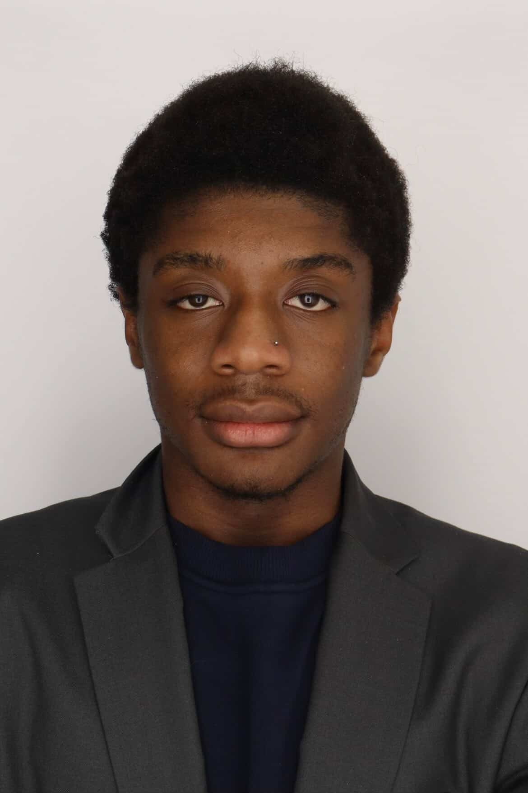
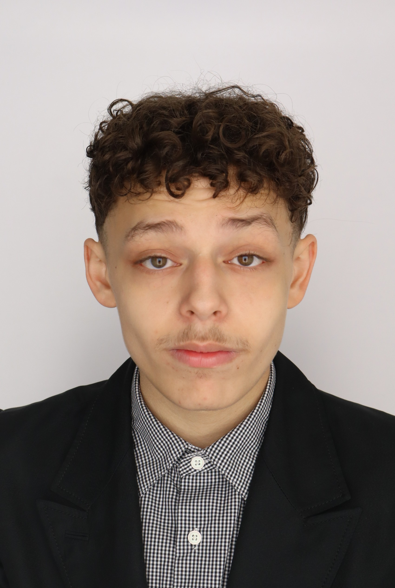
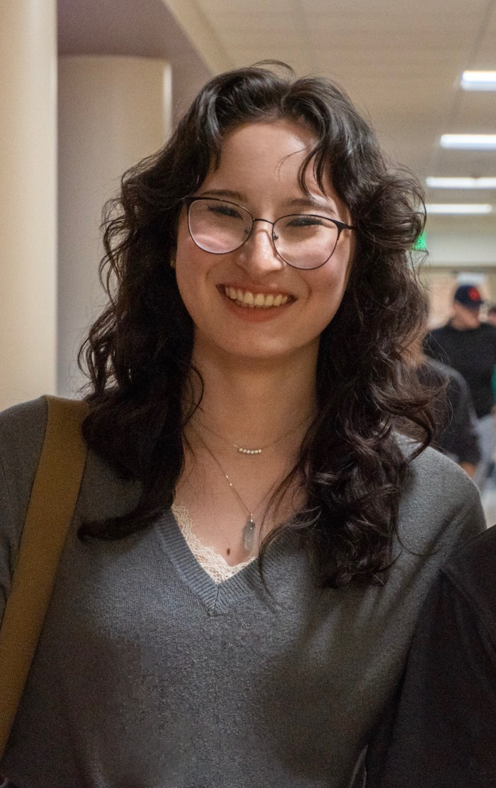

Justin Tseng - President
Justin is a Junior at the NYU College of Arts and Sciences, where he is double-majoring in Philosophy and Economics. He started his debate career as a novice in the Spring 2025 and has since secured top ten speaker awards at over 90% of the tournaments he's attended. He placed 5th in the nation at the 2025 novice breakout at CEDA Nationals, is the defending Novice East Regional Champion, and is a two time National Debate Scholar and IPPF Ambassador. He previously served as the team treasurer and was named an NYU Emerging Student Leader for his service. As President of NYU CEDA, he is committed to fostering success for the team through collaborative, result-driven leadership that centers the development of its membership.
Jaylin Galvan - Vice President
Jaylin is a junior at CAS studying Politics with a minor in Public Policy and plans to attend law school afterwards. She has been a part of NYU CEDA since her freshman year, where she previously served as Social Media chair and mentor. As of recently, she's become a research fellow with SGAC, where she works on space mitigation and international regulatory frameworks, contributing to research on emerging legal challenges. Outside of research, Jaylin has interned with the Office of Senator Kirsten Gillibrand, the New York State Attorney General's Office, and the Nuclear Age Peace Foundation.

Terry Lesane - Treasurer
Terry is a second-year student at the NYU College of Arts and Sciences, majoring in Politics with a minor in Data Science. He was the president of his dorm hall, Brittany Hall, where he hosted and planned numerous events for his residents. He also represented over 500 residents at inter-residence hall meetings, where he advocated for solutions to quality-of-life issues. He debuted his policy debate journey at the Monmouth tournament and has gained a vast amount of experience since then, winning second speaker at the annual intramural celebration. As treasurer, he plans to ensure efficient reimbursement while also coordinating the team's budget to ensure all members can participate without having to worry about financial stress
Clara Vaquero - PR Officer
Clara Vaquero is an incoming sophomore at NYU double majoring in Politics and Public Policy, with a strong interest in law and advocacy. In high school, she developed a passion for civic engagement by organizing a voter registration drive aimed at increasing political awareness among her community. Over the summer, Clara worked as an advisor with College and Career Lab, where she mentored high school students in exploring potential career paths and navigating their academic interests. As a member of NYU-CEDA, Clara is excited to strengthen her research, argumentation, and critical thinking skills while engaging in competitive policy debate.
Elinor Adams - PR Officer
Elinor is a second-year student concentrating in environmental justice and philosophy at Gallatin. She has plans to pursue a J.D./Ph.D and a career in environmental justice law. In her time at CEDA, she has made it to elimination rounds at East Regionals and placed 2nd at Big Tent Online, securing top ten speaker awards in both. She also represented NYU CEDA at the 3rd annual Climate Forum at Stonybrook University.
Melanie Castro - Webmaster
Melanie is a second-year student at NYU Liberal Studies who plans to declare her major in Public Policy with a minor in Inequality Studies. She began her debate journey last year, where she debuted at Suffolks. Outside of CEDA, she has interned at Assembly member Grace Lee’s state senate campaign. As an intern, she petitioned and communicated with residents, going door to door, conducting meaningful conversations about important issues and policies affecting the community. Melanie is excited to work on the E-board!

Joseph Baez - Secretary
Joseph is a second-year student within the NYU College of Arts and Sciences, where he is double-majoring in Politics and Philosophy pursuing a career in the legal field. He is currently interning under the office of assemblywoman Grace Lee and assisting with her campaign for State Senate. Within his first year at NYU, he has streamlined voting processes through NYU's student government systems and stimulated voter engagement within the Elections Commission Committee, organized events for NYU's HEOP class of '26 within the Senior Sunset Committee, and debuted for CEDA at the Gotham Debates finishing as a quarter-finalist and the 7th overall speaker. Joining the E-Board as Secretary of CEDA he bears great interest in establishing connections and bolstering the team's campus presence.

Caitlin Travers - Data Governance Officer
Caitlin Travers is a second-year student at NYU studying English Literature with minors in Law & Society and Philosophy, and is a Dean's List honoree. Originally from North Carolina, she brings over four years of competitive debate experience to NYU, having competed in Public Forum throughout high school before transitioning to Policy in college. In her novice season, she won the Northeast Regional Championships, earned top speaker awards across multiple tournaments, and broke to elimination rounds at every tournament she entered. Outside of debate, Caitlin interns for a Manhattan Assemblymember, where she works on local policy and constituent affairs, and enjoys reading critical literary theory and reviewing movies. She is excited to contribute to the CEDA community this upcoming year as Data Governance Officer!